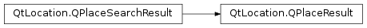

QPlaceResult¶
Synopsis¶
Functions¶
- def
distance() - def
isSponsored() - def
place() - def
setDistance(distance) - def
setPlace(place) - def
setSponsored(sponsored)
Detailed Description¶
The
PySide2.QtLocation.QPlaceResultclass represents a search result containing a place.The
PlaceResultholds the distance to the place from the center of the search request, an instance of the place and an indication of whether the result is sponsored or organic.The intended usage is that a
PySide2.QtLocation.QPlaceSearchResultcan be converted into aPySide2.QtLocation.QPlaceResultlike so:if (result.type() == QPlaceSearchResult::PlaceResult) { QPlaceResult placeResult = result; qDebug() << placeResult.place().name(); qDebug() << placeResult.place().location().coordinate(); qDebug() << placeResult.distance(); }The implementation is handled in such a way that object slicing is not an issue.
-
class
PySide2.QtLocation.QPlaceResult¶ -
class
PySide2.QtLocation.QPlaceResult(other) Parameters: other – PySide2.QtLocation.QPlaceSearchResultConstructs a new place result object.
Constructs a copy of
otherif possible, otherwise constructs a default place result.
-
PySide2.QtLocation.QPlaceResult.distance()¶ Return type: PySide2.QtCore.qrealReturns the distance of the place to the search center. This field is only relevant provided the search request contained a search area with a search center. Otherwise, the distance is NaN indicating an undefined distance. The default value for distance is NaN.
-
PySide2.QtLocation.QPlaceResult.isSponsored()¶ Return type: PySide2.QtCore.boolReturns true if the result is a sponsored result.
-
PySide2.QtLocation.QPlaceResult.place()¶ Return type: PySide2.QtLocation.QPlaceReturns the place of the search result.
-
PySide2.QtLocation.QPlaceResult.setDistance(distance)¶ Parameters: distance – PySide2.QtCore.qrealSet the
distanceof the search result’s place from a search center.
-
PySide2.QtLocation.QPlaceResult.setPlace(place)¶ Parameters: place – PySide2.QtLocation.QPlaceSets the
placethat this result refers to.
-
PySide2.QtLocation.QPlaceResult.setSponsored(sponsored)¶ Parameters: sponsored – PySide2.QtCore.boolSets whether the result is a
sponsoredresult or not.
© 2018 The Qt Company Ltd. Documentation contributions included herein are the copyrights of their respective owners. The documentation provided herein is licensed under the terms of the GNU Free Documentation License version 1.3 as published by the Free Software Foundation. Qt and respective logos are trademarks of The Qt Company Ltd. in Finland and/or other countries worldwide. All other trademarks are property of their respective owners.